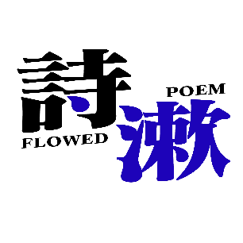

前言
一、这本手册讲了什么？
做游戏一定要有大纲。由上海米哈游网络科技股份有限公司制作发行的一款开放世界冒险游戏《原神》展示了一个多元的虚拟世界，在其看似简约的主线剧情背后，埋藏着一个纷繁复杂、严丝合缝的世界文化拼盘。然而《原神》采用的是碎片化的叙事方式，并且含有大量的生僻概念。只是依据主线剧情的叙述，玩家还难以理解世界观中丰富的设定。
因此，我制作了这本世界观手册，旨在用更加直观的方式，从混沌中梳理出明晰的脉络，形成这样一部国别体和纪传体结合的通史，帮助玩家以尽量低的理解成本，把握《原神》的基本设定。由于涉及大量剧透，在过完游戏本体剧情（尤其是魔神任务）之后再进行阅读，效果更佳。
本手册的主要内容是各国历史及核心角色的故事，不包括主线、活动剧情。内容几乎全部源于游戏内的文案，尤其是圣遗物、武器、书籍中的背景故事，本手册的编写工作从2022年开始，跟随《原神》的持续更新，断断续续整理到了现在，并会持续免费更新。
二、这本手册有何优点？
（一）整合性
通过对旧版本的反复扬弃，对文本的不计其数的删改，我这本迭代数次的手册，已经基本汇集了这五个优点：
1.在【全球范围】内，第一个把【原神世界观】做成了【可直接印刷】的【中文】手册，形式灵活，下载后的文件甚至【无需联网】就可使用，大量节省了在各种资料库到处搜索，复制粘贴信息的麻烦；
2.在汇集了已公布的重要信息、图文并茂的基本要求上，还尽可能做到了【轻量化】，保证了【通俗性】，保证零基础的读者也能快速取得概念索引，与传统的、理解门槛较高的文化考据做出了区分度；
3.充分还原【游戏本体】的叙述方式，尊重【原始设定】，几乎所有文本都有可追溯的来源，对于不确定之处也有特别标注；对于争议性话题进行充分悬置，就事论事；不搞私设，不辱角色，不P鬼图；
4.在手册的获取渠道上【不设任何门槛】 ，【不搞任何套路】，不需要加下载group，没有带密码的压缩包，没有绕来绕去的链接，没有捆绑套装，没有爱发电，甚至下载都不需要额外开通网盘会员来加速。所有操作就只需要复制，点开链接，下载，保存，就是这么【流畅】，就是【纯赚口碑】；
5.截至手册的月之四修订2版本，所有内容的整理和编排，都是我【一个人】完成，在文本的编排方式，做到了【高度统一】，尽可能地减少了因为信息差导致的内容冲突。
此外，手册还附赠两个文件，作为手册内容的补充：
1.大事年表《提瓦特历史时间线》：以时代为主要脉络，细致地梳理了八个国家发生的重大事件，直观地展示了各国的时代特征，适合作为手册的目录使用，也能作为各国历史对比的参考资料，从而快速锚定重要历史事件的时间点。
2.剧情指南《原神剧情线性观看顺序》：严格依据游戏内「旅行历程」规定的顺序以及游戏版本内容发布顺序整理而成，紧密贴合剧情发布、演出的逻辑，梳理出了剧情的线性顺序，哪怕是对原神剧情一无所知，也能根据该指南快速把握原神剧情的核心。
（二）便捷性
关于该手册的核心定位，不妨先讲一个小故事。在十几年前的苹果发布会上，乔布斯从iphone和imac中间拿出一个全新的产品——ipad。它比iphone大，又比imac灵活，但当时的人们，并不能准确定义ipad作为电子设备的功能：虽然它的确是一个新奇玩意儿，但它既不能替代手机的通话功能，也无法像电脑那样，完全作为生产工具来使用。
不过，后来的实践证明了ipad独具一格的生态位：恰恰是ipad，恰恰是这块不伦不类的「巨型iphone」，成为了首款真正实现大规模普及，并重新定义了现代平板电脑形态与交互逻辑的产品。只因它足够极简，足够便捷，足够酷。「不那么小，也不那么大」的屏幕，恰好就是看电子书、看视频、记笔记乃至盖泡面的优秀工具。
玄妙之处在于，正是ipad，在十几年前重塑了我对电子产品的印象。此后，平板电脑这一工具的设计逻辑，也结构出我的生活方式。我设想着这样一个直观的内容架构——它应当是触手可得的，应当在信息的呈现上尽量丝滑、连贯，还应当可以随时移动位置，一只手就能轻易拿走，就像拿走酒席桌上的一块蛋糕那样——它可以作为一串电子数据，放在你的硬盘里永久保存；也可以作为一本书籍，放在你的桌面上随意翻阅。
正因如此，我的这本手册的生态位就是ipad。它既是对iphone式的「碎片化叙事」的超越，也是对imac笨重的、庞杂的「文件库」的浓缩。读者正需要这样一个信息浓度高，又不失便捷直观的阅读体验，而我做的就是这样的垂直内容。我的建设并不会取代wiki和考据视频，但我做的就是在填补这中间的沟壑，从而占据这一生态位。
这本书，也就文本的通顺度、标点的使用还有美术表现需要进一步完善，并且目前没有任何团队帮我修缮，但在其他地方，我已经把各种参数都拉满了。至于未来有没有高人能做出更好的，我不可能知道，就算能知道，我现在也管不着。我只看现在（2026年2月），在这个生态位上。我这本就是最好的，没有之一。
更进一步说，授之以鱼，不如授之以渔。智能手机对电子钱包的架构，彻底改变了人们的支付方式，也让容易丢失、不易统计的现金退居二线。同样，我也希望通过公布这本ipad式的手册的内容以及设计思路，能为读者创造出阅读、整合碎片化文本的全新姿态。
（三）备份功能
关于为什么要在手册中添加大量的文本原始内容，这是因为：互联网的内容是会逐渐消失的。维护数据需要大量的成本，任何在互联网上发布的东西都不会长期存在，甚至会五年进行一轮小更新，十年进行一次大更新，旧的内容是会永久消失的。更不用谈，现在ai的发达，更导致错误信息在互联网中的泛滥，例如关于鸟类的图片，很多都是ai，并且与真实拍摄内容混淆在一起，极难分辨。
《魔兽世界》是一个长线运营、具有宏伟世界观架构、人物众多的rpg游戏，经过二十年的运营，它已经塞入了千万级别的文本量。但我至今都没有发现一个充分还原游戏内文本的魔兽世界数据库，这导致，如果我想查一个基本的人物设定，搜到的基本上都是二次创作出来、文本没有出处的视频，并且有大量的垃圾信息来干扰我的检索，很多都错得非常离谱，甚至是用玩家讨论的野史来代替正史。
已有这样的教训，不可在原神上重蹈覆辙。自知单凭个人的力量，无法做出wiki那样庞大的文本库，但我又有保存文本的需求，所以我给出这样的一个备份文本的生态位，它应当是离线的，内容充分，并且「转述」较少，不能用考据视频式的转述代替文本本身。
我希望过了许多年之后，后人依然能使用我的备份成果，并从中得到一些便利。再次强调，只有存到硬盘、光盘里的数据，才能长期存在。正如「木偶」就是阿兰对玛丽安、乃至整个水仙十字的备份，正因如此，水仙十字的故事才会借「木偶」之口，在五百年后的提瓦特继续繁衍。
三、如何阅读手册？如何提出修订建议？
（一）阅读手册
本手册欢迎以下读者：
1.对设定有困惑的剧情爱好者；
2.对设定有深度了解，并能提出可执行的修订、优化方案的人；
3.需要多次引用原文的考据者，以及需要查找原始设定的二创作者；
4.有印刷需求的人；
5.其他热衷于研究原神设定的人。
可以在手机上看，也可以在平板上看；可以在电脑上看，也可以打印出来看（为获得最佳的图文观赏体验，建议选用彩色印刷）；可以坐着看，也可以躺着看；可以闲暇时看，也可以摸鱼时看。我的所有内容完全免费，一键三连并转发就是对我最大的支持。由于涉及大量剧透，在过完游戏本体剧情（尤其是魔神任务）之后再进行阅读，效果更佳。
在pdf页面按Ctrl+F可以检索任意文本。另外世界观手册附赠的大事年表《提瓦特历史时间线》规定了事件发生的时间先后，也可以当目录用。
网站作者注：在本网站上，你可以按照你想查看的内容类别跳转至对应的页面，通过页面边上的目录导航跳转到对应的内容；如果目录导航遮挡内容你可以点击边上的↑（向上小箭头）收起目录导航，再次点击可以展开。
（二）修订建议
因为文本来源的时间跨度大，会出现前后文本不一致、新的正式文本对旧的推测没有及时修正的情况。手册内仍有很多错误，需要读者指出。
若有修改意见，可以联系我，还可以在共享文档用评论功能进行批注。

诗漱（责任编辑）
网站作者注：如果遇到非内容问题，可以在Github项目页面提交Issue
（三）ai的局限性
关于原神设定，包括但不限于角色故事、历史事件，都不要直接问ai！不要直接问ai！不要直接问ai！ai抓取的材料主要是社区内错误百出的讨论，以及一些尚未及时更新的过时考据和百科，甚至baidu百科、meng娘百科这些权威平台的一些材料都是完全错误的——材料错得离谱，那得出的结论难道还能正确吗？
如要查询到正确的设定，有以下三个方法：
1.我在本手册末尾编者后记-《三、尾声：重要参考资料，以及对原神皮套论和抄袭论的辨析》中给出了参考资料的来源，另外，本手册中每个大标题的脚注都标明了参考资料的具体名称，可以通过这些信息渠道自行检索；
2.如果实在不想费脑筋，就直接把本手册的pdf文件喂给ai，ai能给你容易理解的梗概，帮助你阅读。这样问它：
3.直接问我。我至少可以保证答案大致符合实际情况，并且能给出具体的来源。一步错，步步错，抱着来路不明的错误答案不放，比一无所知更可怕！
再次提醒——有问题，不要直接问ai！不要直接问ai！不要直接问ai！有问题直接问我都行，但就是不要直接问ai！
网站作者注：本网站提供了pdf版本的手册，比PDF更适合AI的阅读，而且将不同部分的文本分开，便于上下文长度较小的AI使用，在一定程度上也可以节约token资源，如有需要可以下载使用
（四）手册的传播
请大力传播我的手册！
考据的影响力注定是有限的。就我个人长期观察，基于「对剧情的关注程度」，各种原神玩家能分成这么几类，呈现从多到少的顺序：
1.完整看了主线，完全不看支线，这里能知道芙宁娜为啥要演水神，知道钟离是假死——人数是最多的。
2.只看一点点主线，完全不看支线，这里能知道纳西妲替代了大慈树王，但不知道赤王和花神，知道散兵做了坏事，但不知道为啥要做坏事——人数和1不相上下，这里的剧情争议是最多的。
3.只关注强度，不关注设定，任何剧情都是点点点跳过，主要住在深渊和幽境——也是人数很庞大的一部分，对于常规的网游（尤其是竞技类网游），只关注强度的玩家通常是最多的。只是由于原神是批着网游皮的内容向游戏，用角色塑造维持用户粘性，所以强度不是最核心的锚点。
4.不但跟进主线，也知道支线的重要概念，这里有水仙十字、奥奇坎、日月前事——从这一层开始，人数就骤降了。虽然奥奇坎和日月前事的梗拉了支线一把，把一些世界观引入了讨论空间，但需要承认的是，讨论这些支线剧情的人数仍然是极少数。
5.不满足于主线，基本了解和地图强相关的支线，这里是鹤观、赤花树、沉玉谷——主要有一些自娱自乐的冷门史同。
6.关注更细致的支线，这里有盗火贤者、雷穆利亚、温妮莎、奥罗巴斯、鹮之王——这里的史同都很少了。
7.驻扎在内容荒漠，关注更冷的支线，这里有鲁斯坦、伊黎耶、雷电五传、执灯人、玛海菈——这一层的内容沉睡在在wiki和考据视频里，很少有人专门讨论。
而我的内容在5-7层波动，所以我深知，我的受众就只有很小的一撮剧情爱好者。如果读者本身对世界观没有太大兴趣，就算硬读，也读不下去。
正因关注剧情具体细节的人太少，关于剧情的争议才会越来越多，以至于屡次发酵，演变成狂热的污蔑，乃至从角色本身上升到玩家群体。但，生活在文本之内的角色，不应遭受无端污蔑；生活在文本之外的玩家，亦如是。
艾尔海森曾翻到的一本书记载：「借由语言的一致性，人们统御思维。语言即是底线、规则、武器与暴力。通过令语言与众不同，我们终于能够另辟蹊径抵达思想上的相对他全。」这难道没有给我们「语言就是思想的边界」之启发吗？换言之，「房间里的大象」之所以是不可忽视的，只因这头大象已在此处用符号的偶然排列，表明了这一必然事实：「房间里，有一头大象。」——对于这一点，你作为一个知情者，当然有义务让别人也知道。当遭遇污蔑之时，不应坐以待毙，而要用文本予以最强烈的回击！
确立已知，探索未知；革除谬论，正本清源——这是考据的终极意义。我把这个意义的一半埋在我的手册里，剩下的一半，就仰赖各位的传播了。
酒香也怕巷子深，请各位小伙伴大力传播并分享我的内容，推送给你们的朋友，甚至在剧情讨论时引用我的建设成果。除非你完全不关注剧情，否则，只要你游玩原神，那么剧情、以及关于剧情的讨论，就必然与你息息相关。也许你的一次无意的传播与科普，就能化解部分不必要的误解，影响社区的剧情舆论，甚至减少外界对原神玩家的污蔑，清除一些网络暴力的祸源。对原神剧情的建设，让我们共同努力。
四、如何认定本手册的法律性质？
（一）本作品的法律性质
1.这部作品能否营利？
《著作权法》第十五条规定，汇编若干作品、作品的片段或者不构成作品的数据或者其他材料，对其内容的选择或者编排体现独创性的作品，为汇编作品，其著作权由汇编人享有，但行使著作权时，不得侵犯原作品的著作权。
我的选择和编排构成了有独创性的汇编作品，而不仅仅是复制，因此我的文本整理属于汇编作品，我享有著作权。对于我的汇编作品及其中的汇编形式，未经许可不得擅自发表、歪曲、篡改、剽窃。但我的汇编作品本质上仍是对米哈游游戏文本原著的二创。二创可以营利，但要根据二创形式判断是否需要向官方申报。
《原神同人周边正式运行指引V1.3》第六条规定，同人文集、同人小说在基于合法合规符合国家政策的情况下，无论盈利与否，均无需提交申报（若包含随刊附赠的实体周边，则依照对应申报流程对实体周边进行申报）。
但《原神同人周边正式运行指引V1.3》第八条规定，针对同人周边和官方素材的关系，以下几种行为是不被允许的：1）【直接使用】、【描改】、【局部改动】官方素材用作同人实体周边或商品详情页素材创作的行为是不被允许的；
我的汇编虽然属于无需申报的同人文集，但由于其中直接使用、局部改动了大量的官方素材，不能用于营利。
另外，《原神同人周边正式运行指引V1.3》第八条还规定了，对游戏截图后调色产出的图片等仅可作同好交流学习之用，不允许以任何理由收取费用；直接使用官方素材印制周边营利的做法则明确属于侵权行为。
我也是一个原摄爱好者，虽然我的原摄是由我的调色而产出的，具有独创性，但它是基于官方素材而产出的，所以我也不能用我的原摄作品营利。换言之，我的世界观汇编本质上也是一种对官方素材的调色，不能用于营利。
2.这部作品能否出版？
根据《著作权法》第十六条规定，使用汇编已有作品而产生的作品进行出版，应当取得该作品的著作权人和原作品的著作权人许可，并支付报酬。
我可以在汇编作品中注明出处，免费传播，但若要涉及出版，我仍需要取得官方授权，并向官方支付报酬。
3.有人将作品作为商品出售，怎么处理？
我不负责印刷，也不以此营利。谁印刷并以此营利，谁就担责。如果张三印刷，并以此营利，那是张三侵米哈游的权，由米哈游向张三追责，不关我的事。
千织：我们回来了。
绮良良：你们去了好久！应该没…没发生什么吧…
千织：没什么，你只要知道，以后枫丹没人敢再对你的货下手了就行。
绮良良：…抱歉，给千织姐添麻烦了。
千织：下次出城的时候，就该叫上枫丹特巡队来护送你，然后中途交接一下，让刺玫会送你下半程…
千织：这样一来，我保证你下次送快递的时候，那些盗宝团都争着抢着要来帮你提包裹。
绮良良：啊哈哈哈…千织姐…你还真会开玩笑。
千织：我没在开玩笑，你知道的。当我说一件事的时候，这件事就已经做完了。
（二）对神人评论的预制回复
顺带一提，随着热度攀升，不可避免地会引来一些荒谬的评论。在此，我对这些评论一次性发出预制回复，予以警示。
| 评论 | 我的回复 |
|---|---|
| 何意味？/堪比钟离假死。/逆天。/原友魅力时刻。 | 你谁啊？ |
| 稻妻时期入坑，须弥时期/4.8时期退坑…… | 你谁啊？ |
| 不如xx剧情/不如xx玩法/不如xx画质/吃点好的吧。 | 你谁啊？ |
| 抄袭神游。 | 如果你要答案，那我在本手册有专门的文章讲，参见《关于「原神抄袭论」》。 但如果你要捣乱，那我只能认为你在2019-2026年整整7年时间都没有任何认知上的进步，并且完全被无良媒体牵着鼻子走。 行吧，你也就这点水平了。 |
| 皮套神游。 | 如果你要答案，那我在本手册有专门的文章讲，参见《关于游戏设定与「皮套论」》。 但如果你要捣乱，那我只能认为你还是别玩别人做的游戏了，因为别人做的人物，总要比你自己优秀一点，你得不到就只能毁掉。 行吧，你也就这点水平了。 |
| 做了这么多有什么用？游戏里照样不能剧情跳过。 | 虽然你不能跳过剧情，但剧情可以把你跳过。 |
| 看不懂，搞这么多门槛和前提，难道不去理清剧情，就不能讨论剧情吗？ | 你难道吃饭不用张嘴，不用咀嚼，不用吞咽，不用消化？ |
| 一个人做的内容，肯定埋了私货。 | 我当然埋了私货，我的私货就是这个公开的丑闻：我无私的、普惠性的建设成果，会将你这种人排除在外。 |
| 都短视频时代了居然还做这么长的书，纯属自我感动。 | 我的读者喜闻乐见，你不喜欢，你算老几？ |
| 全是碎片化叙事，根本读不懂，感觉像说谜语，就不能通俗一点吗？ | 我做的内容虽说是在获取渠道上不设门槛，但我反复强调，这些内容本身就是有门槛的。 对于深度的剧情爱好者、考据者，我尽可能地为其提供便利。但对于明明没有研究游戏文本的耐心，对碎片化叙事感到厌恶，却硬要用「通俗读物」的标准来要求我的读者，我这道制作工序复杂的什锦拼盘，伺候不了你们刁钻的口味，另请高明吧。 |
| 真正破局的方式只有一个，弃坑二游。 多看书，做对的事。努力提升自己现实的技能，热爱工作，热爱生活，热爱现实中的家人和朋友。这就是超越散兵的方法。但如果你热爱二游和二游的角色，还在因为热爱对厂商有期待。你最终的归宿只有两条，成为某厂商的孝子，或者成为散兵被不断“背叛”。 |
一群人在热火朝天讨论一段虚构故事的情节，突然有个叫张三的人走过来说教这群人：「你们真无聊，故事都是假的，有这精力还不如多关注现实生活！关注你们的学习、事业、家庭才是最重要的！」但事实上，除非满足以下情形，否则，张三均无权对该群体的合法交流行为进行指责与说教： 1.张三具备教师资格，且该群体均为其执教学校的在校学生，张三对其执教的在校学生负有教育、管理、引导的法定职责。 2.张三为该群体中全体人员的监护人。监护人有职责代理被监护人实施民事法律行为，保护被监护人的人身权利、财产权利以及其他合法权益等。 3.张三为依法聘任的人民调解员，在征得该群体同意后，可就相关纠纷进行说服、疏导。 4.张三发现该群体的讨论行为扰乱公共场所秩序，可进行劝阻。 5.张三发现该群体讨论行为可能引发危险，张三作为在场人员，可基于紧急避险原则进行劝导，阻止危险发生。 注意，在以下情形中，张三的说教行为没有法律的专门规制，需要结合具体情况具体分析： 1.张三为该群体全体成员的直接上级、人力资源负责人，可根据单位规章对员工进行纪律管理，但并不能侵犯员工在非工作时间合法的休息权与言论自由。 2.张三是该讨论群体所属社团的法定代表人、负责人，依据社团章程，可对社团活动方向进行引导，其权力源于组织内部的自治规则。但关于自治规则以外的合法事项，张三无权干涉。 3.张三为该群体所在场所的管理者（例如图书馆、咖啡馆、社区活动中心负责人），依据场地使用协议，可对违反场所管理规定的行为（例如大声喧哗影响他人）进行劝导。但对于协议规定以外的合法活动，张三无权干涉。 |
| 你做的是落后的经院哲学，并且，原神是小宝宝才会玩的游戏，我们应当抵制二游。 | 你首先该做的不是写评论批判别人，而是像你的主子那样，依靠先进思想的威能，找个对象。 不玩二游、精通哲学的你如此帅气，该不会没人喜欢吧？ |
网站作者注：
以上评论的统一回复：爱看看不看滚，你不喜欢看这些东西你打开我的网站干什么
我在此郑重提醒，在我的手册的建设过程中，绝不欢迎以上呈现的评论，一经发现，直接拉黑。而对于情节轻微的侵权行为，例如口头侮辱，我出于基本的仁慈，暂不追究。但对于产生实际上恶劣影响的严重侵权行为，我会采取必要的法律手段，追究其法律责任，维护合法权益。这些严重侵权行为包括但不限于：
1.歪曲事实，并大范围散布谣言。
2.泄露并大范围传播他人隐私。
3.制造有一定规模的网络暴力。
4.擅自售卖手册下载链接。
5.擅自印刷并售卖实体手册。
6.未经允许，修改手册内容。6 注意，从封面一直到封底的所有文字、图片、排版形式都属于「手册内容」。
郑重提醒，米哈游法务部已经集中通报了多起网络侵权维权案件结果：针对多名网络博主、用户恶意造谣诋毁企业及旗下游戏、侮辱谩骂游戏玩家的违法行为，米哈游通过报案、民事诉讼等法律途径完成了集中追责，相关侵权人已被依法处以行政处罚、采取刑事强制措施，或经法院判决承担民事侵权责任
（三）关于泄密内容——以米哈游诉妮可少女案为例
如果你不关心法律，那法律就会来关心你。——这一条箴言的价值，集中表现于米哈游诉妮可少女案。「妮可少女」是米哈游旗下《原神》等游戏在全球范围内最具影响力的泄密者的账号（即「内鬼」）。他运营的网站「玉衡杯数据库」，是原神圈内知名的未公开内容泄密平台，他运用破解安装包和加密信息的技术，整理出精准的游戏数据、卡池预测、版本规划爆料并在网站集中发布，累计3年时间，发布了上万条米哈游游戏的泄密内容（即「内鬼消息」）。
据悉，2025年12月，米哈游多次向妮可少女发送律师函与侵权下架通知，要求其停止全部侵权行为、关停相关侵权站点。2025年12月29日，妮可少女回应称将不再发布新的解包内容，但明确拒绝关停玉衡杯核心网站，未终止持续侵权行为。2026年1月，妮可少女还参加了原神fes活动，并参观了米哈游总部，还在社交账号中公开行程与照片，被网友解读为「对米哈游的挑衅」。
2026年2月5日，一份在网络流传的诉状显示，米哈游在美国佐治亚州法院正式对妮可少女提起跨国民事诉讼，原告米哈游在诉状中提出7项核心诉讼主张，请求被告关闭所有内鬼网站，并禁止其实施破解技术、泄密、教唆违约等侵权行为，同时，请求被告赔偿实际损失、法定最高限额赔偿以及惩罚性赔偿，没收被告因侵权所获的全部利润，并承担原告所有诉讼费用和律师费。
据悉，被告为中科大少年班毕业，现为佐治亚理工学院数学博士。虽有一定的聪明才智，但法律意识之淡薄，实在令人扼腕叹息。上述事件曝光后，多个头部内鬼账号集体发布道歉声明，宣布永久停更解包内容、注销相关账号。这标志着，长期霸占社区的内鬼爆料生态终于走向了凋敝。
我认为，泄密内容看似有利于玩家进行抽卡规划，但对原神这一内容向游戏的长期运营，百害而无一利。就内容发布而言，最核心的负面影响有两个：一方面，泄密信息不但包括未来角色的形象与设定，更透露了未来剧情关键信息，这极大地扰乱了内容运营的节奏，直接让官方后续的宣发物料失去了悬念，传播效果大幅衰减，甚至完全失效。最具影响力的一次泄露，甚至提前7个月曝光了枫丹10个主要角色的官方设定图（史称「枫丹八骏图」），直接使官方对枫丹的长期铺垫彻底作废。另一方面，一些泄露出去的商业秘密极易为竞争对手掌握，竞争对手可据此针对性地调整自身的产品排期，见招拆招，甚至提前发布同类设计，从而抢先获得市场份额与版权保护，这将极大削弱原创内容的核心竞争力。
需要强调的是，在线内容泄密是毋庸置疑的违法行为。具体而言，在线内容泄密行为根据行为主体、实施手段、情节轻重、损害后果的不同会分别构成民事违约（违反《保密协议》行为
第10条第2款禁止用户对游戏软件进行反向工程、反向汇编、反向编译或者以其他方式尝试发现软件代码（包括但不限于软件的源代码），对游戏软件运行过程中释放的终端内存数据、客户端与服务器端交互数据、系统数据，进行复制、修改、挂接运行或创作衍生作品，包括使用非经合法授权的第三方工具/服务接入软件和相关系统。
第26条规定，未经米哈游事先书面允许，用户不得通过第三方软件公开全部或部分展示、复制、传播、播放米哈游游戏服务中的游戏画面。
可以发现，泄密行为的行为主体具有普遍性，涉及了普通玩家、测试服参与者、内容制作者（例如公司员工）、内容传播者（例如视频制作者、发帖者）、工具制作者（例如内鬼网站运营者）等多种身份；侵犯的法益具有复合性，一次简单的泄露就可能同时侵犯不同的权益；实施的手段具有多样性，多种信息传播形式、传播渠道都有可能被认定为泄密——这种对内容泄密行为的严格规制，也侧面反映出官方对其作品的保护力度是非常大的。
妮可少女案已经证明，通过获取、传播游戏内鬼消息，侵犯商业秘密，损害商业利益，破坏市场竞争秩序的行为，将会受到游戏厂商追究，并承担法律责任。对于该方面的问题，绝不能抱有任何侥幸心理。而作为官方内容发布的末端环节，本手册不可不对内容来源做严格把控。因此，本手册在此做出郑重承诺：
本手册所使用的一切游戏内容，均为官方已经公布的素材。本手册绝不将泄密素材（包括但不限于解包内容，内鬼推测）作为讨论、分析的根据，并且拒绝任何涉及内鬼消息的修改建议。